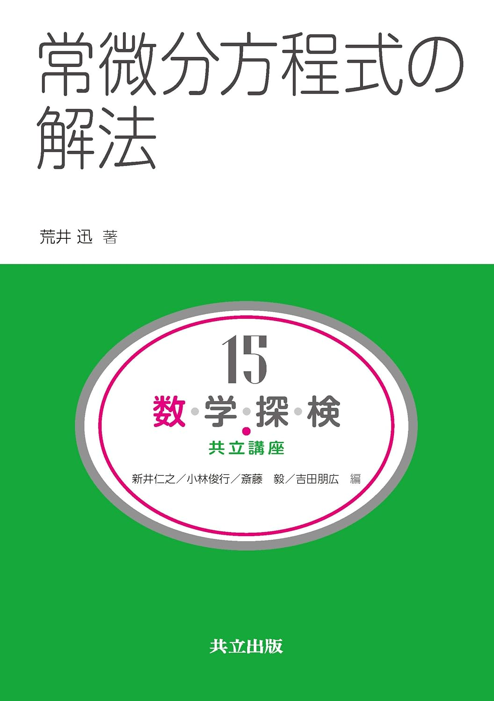
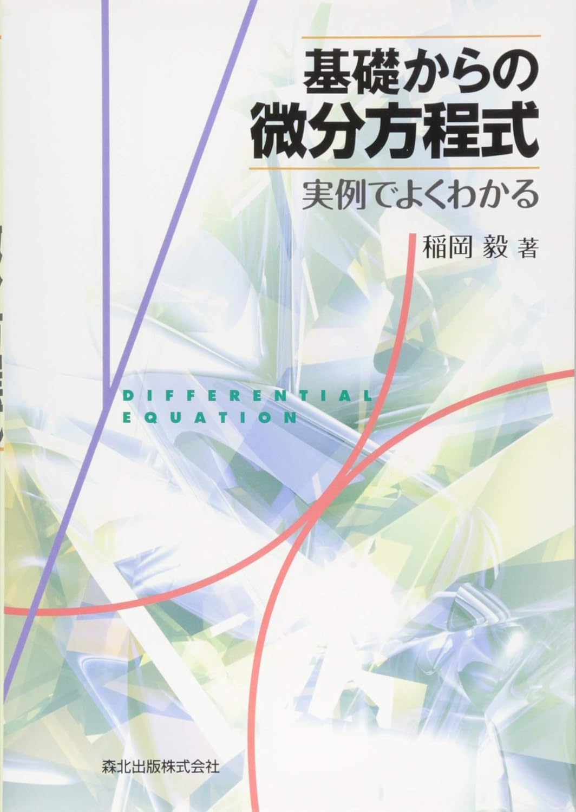
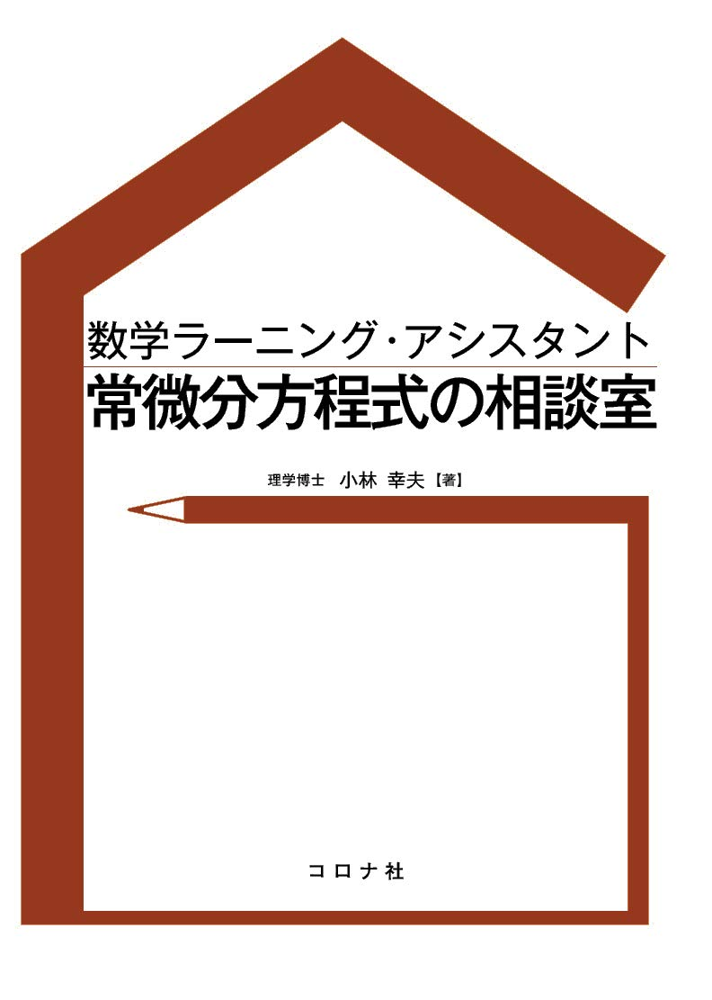

微分方程式
物理においても重要な役割を果たす微分方程式についての参考書を紹介します。

常微分方程式の解法 荒井迅著
やさしい本で一通りさらったあと、数学的に厳密なモヤモヤしている部分を多く払拭するのに適している１冊。解の一意性の証明などが丁寧に書かれていて非常に嬉しい。

基礎からの微分方程式 実例でよくわかる 稲岡毅著
オーソドックスな内容がコンパクトにまとまっている良書。初学者がよく間違えそうなポイントが「注意」の形で多く挙げられているのがありがたすぎて土下座。勘違いが多く発生しがちな微分方程式の勉強にピッタリ！

常微分方程式の相談室 小林幸夫著
QAが多く乗っている副読本的な立ち位置の教科書。とにかく多く発生する微分方程式に関する疑問にひたすら答える形式の本。どこの神社のお守りよりも置いておくと安心します。